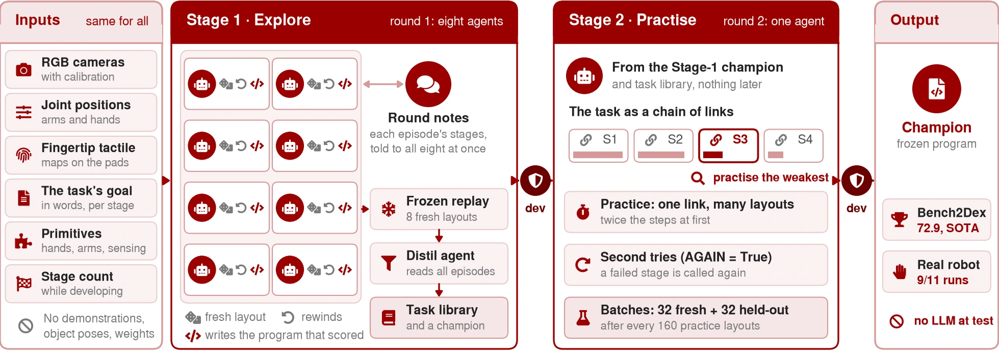
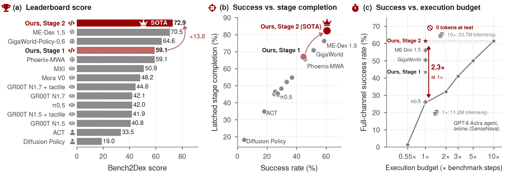
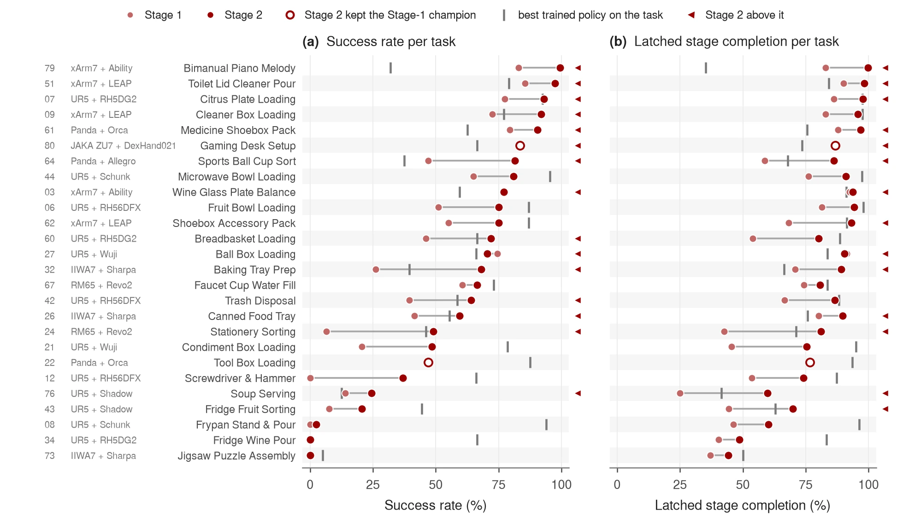
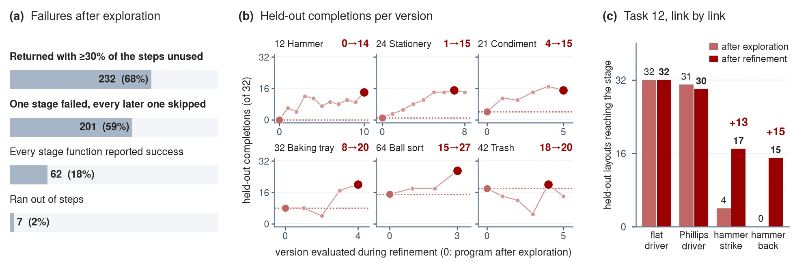
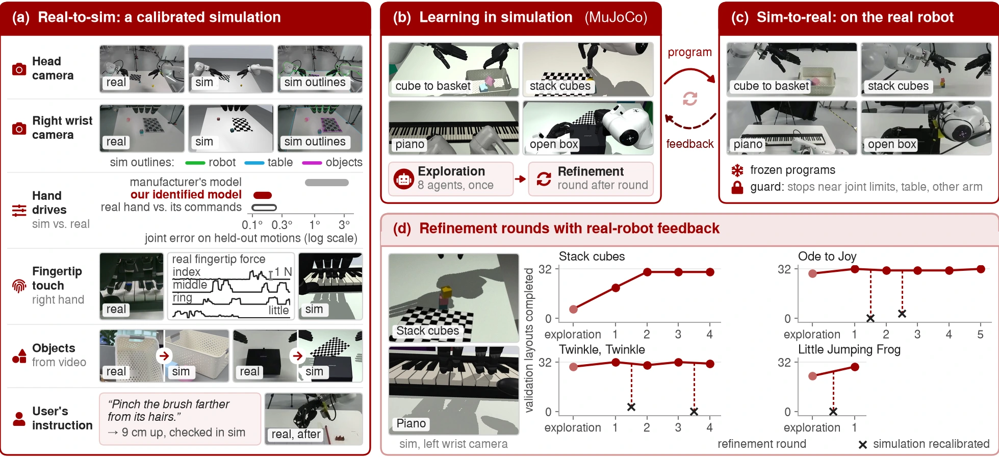

PyRUA-Dex
Explore, Then Practise
Coding Agents Learn Dexterous Bimanual Manipulation Without Demonstrations
PKU DAGroup, Peking University
Coding agents explore a task in simulation, practise it link by link, and hand over one frozen program per task: no demonstrations, no trained weights, no language model at test time.
A frozen program for every task, learned from the agents' own trials
Abstract
Dexterous bimanual manipulation is usually learned from demonstrations, which are expensive to collect for multi-fingered hands and do not carry over from one hand to another. We show that coding agents can learn it from their own trials in simulation and hand over a program that runs frozen, with no demonstrations, no trained weights and no language-model calls at test time. PyRUA-Dex learns a task in two stages. In the explore stage, eight GPT-6 Astra agents work the task in parallel on fresh layouts, with rewinds and the simulator's stage feedback, and a distilling agent turns their frozen replays into a task library and a champion program. In the practise stage, one agent takes over the champion and treats the task as a chain of links: it runs single links over tens of layouts, lets failed stage functions try again, and keeps a new champion only if it is no worse on 32 development layouts. On Bench2Dex (26 bimanual tasks, 12 arm–hand embodiments, 5,200 evaluation episodes), the explored champions score 59.1 and the practised champions 72.9 (success rate 44.6% → 60.6%), the highest score on the benchmark, ahead of the best trained policy (70.5). At the benchmark's step budget the frozen programs succeed 2.3 times as often as a GPT-6 Astra agent that controls the robot online, which needs ten times the budget and 34M tokens per episode to match them. On a bimanual Franka FR3 rig with two 22-DoF Sharpa hands, the same procedure, run in a calibrated MuJoCo twin with objects reconstructed from a phone video, raises the development completions of 14 tasks from 31% to 57%, and its cube-to-basket champion completed 9 of 11 runs on the real robot.
Explore, then practise
Both stages are run by general coding agents, Codex CLI sessions of GPT-6 Astra, each with a shell, a simulator of its own and the codebox. Stage 1 finds a way through the task; Stage 2 makes the way hold on layouts it has never seen.


Two stages, one gate
Explore
find a way through the task
- Eight seeds in parallel. Each agent gets the task library, a fresh layout and a stage not yet solved.
- Rewinds. Eight per layout: the agent tries one stage many times and asks for the stage count after every attempt.
- Round notes. A stage reached by one seed is told to all of them at once, and a librarian agent keeps the notes and the code they point to.
- Frozen replay. Each seed writes the program that redoes what scored; it runs alone on eight fresh layouts.
- Distil. A distilling agent writes the task library from frozen rates only, and names the champion.
Practise
make the way hold
- Link report. The champion on 32 fresh layouts, stage by stage, so the weakest link shows before any work begins.
- Practice runs. The program up to one stage over tens of fresh layouts, with twice the benchmark's steps.
- Second tries. With
AGAIN = True, a stage function that did not end ok is called again while steps remain. - Batches. Each version on 32 fresh and 32 held-out layouts, at the benchmark's steps; one is due every 160 practice layouts.
- Choose. Within a round of 1,500 layouts, the version with the best held-out record goes to the gate.
A task is a chain of links
rk: layouts that reach stage k among those that entered it
Five links that each hold on six layouts of ten complete one layout in thirteen, so a program that worked once fails on most layouts.
The gain from a link grows as the link weakens, ∂ log SR / ∂rk = 1 / rk: Stage 2 finds the weakest link and raises it.
- Explore searches for some motion that gets each stage counted at all, rk > 0: grasps, orders and motions, many attempts on few layouts.
- Practise needs link rates measured over many layouts: once every link works, the product governs.
- Second tries raise a link directly. In 68% of the explored champions' failed dev runs, the program had returned with three tenths or more of the step budget unused.
- Every measurement is reported link by link, stage functions of different agents fit together, and a single link can be practised alone.
What a program looks like
AGAIN = True # failed stage functions are called again while steps remain
STAGES = ['place_flat_right', 'place_phillips_left',
'hammer_strike_wood', 'place_hammer']
def setup(cb, ctx): # measure the table, find what the stages need
cb.table()
ctx['box'] = cb.locate(['wooden box', 'box'], min_score=.6, name='box')
ctx['hammer'] = cb.locate(['hammer'], min_score=.5, name='initial_hammer')
...
def place_flat_right(cb, ctx): # starts where setup left robot and scene
tool = cb.locate(['screwdriver'], min_score=.6, name='flat')
o = cb.move_to('right', grasp_point(tool), approach=[0, 0, -1],
reconfigure=True)
cb.close('right', squeeze=.005)
if not cb.holding('right'):
return result(False, 'flat_not_held') # the runner tries again later
...
seen = cb.relocate('right', ['screwdriver'], near=ctx['box'].xy,
min_score=.55)
return result(inside(seen, ctx['box']), 'flat_in_box')
def hammer_strike_wood(cb, ctx): ...
def place_hammer(cb, ctx): ...cb is the codebox: hand and arm motions on the robot's hand model, sensing from the calibrated cameras, touch from joint lag and the tactile maps.Task 12 · Screwdriver box and hammer
UR5 + RH56DFX · formal episode of this program · 4×
The codebox: one set of calls for every robot
Agents and programs drive the robot through the codebox, a layer of primitives that carries no knowledge of any object or task.
Hands as grasps
A hand model built from the robot's public description, without reading any link or joint name: fingers and thumb, bend, curl and spread groups, and the widths each finger set holds. The same calls drive all 12 Bench2Dex hands, from 6 to 22 joints, and our Sharpa hands.
Plan whole, then move
Arm calls solve every pose before anything moves, and say why a motion cannot run: unreachable, below the measured table, or in need of an arm reconfiguration. All motions run at the joints' speed limits.
See through the calibration
SAM 3 masks for a ladder of prompts, combined across the calibrated fixed cameras into position, footprint, height and yaw; wrist cameras measure again from close by.
Feel and report
Touch from the fingertip maps and from joint lag, read against each robot's measured drive response. Every call returns an outcome with its reason, data and steps, so a program checks each step and retries, adjusts or moves on.
From an episode to a program
When an exploring layout reaches a stage, the harness compiles the path the agent kept into a recipe, the palm's waypoints relative to the located objects split at every grasp and release, and a draft program in the staged form. The agent turns the draft into a program by closing the loop: measuring again before contact, checking that a hand holds, and stating how each stage function fails.
The highest score on Bench2Dex
26 bimanual tasks, 12 arm–hand embodiments and 4 perturbation channels, 5,200 formal episodes under the benchmark's own protocol. Score = 0.45 SR + 0.45 LSCR + 10 Eff.
| Method | Type | Demos | SR (%) | LSCR (%) | Eff | Score |
|---|---|---|---|---|---|---|
| PyRUA-Dex, Stage 2 | Agent | none | 60.6 | 82.3 | 0.859 | 72.9 |
| ME-Dex 1.5 | VTA | 58.6 | 76.3 | 0.979 | 70.5 | |
| GigaWorld-Policy-0.6 | WAM | 51.4 | 70.9 | 0.962 | 64.6 | |
| PyRUA-Dex, Stage 1 | Agent | none | 44.6 | 67.0 | 0.889 | 59.1 |
| Phoenix-MWA | WAM | 45.6 | 65.6 | 0.903 | 59.1 | |
| MXI | VLA | 36.9 | 54.8 | 0.970 | 50.9 | |
| Mora V0 | VLA | 33.2 | 52.3 | 0.974 | 48.2 | |
| GR00T N1.7 + tactile | VLA | 29.7 | 48.4 | 0.950 | 44.6 | |
| GR00T N1.7 | VLA | 27.2 | 45.5 | 0.940 | 42.1 | |
| π0.5 | VLA | 27.4 | 44.7 | 0.960 | 42.0 | |
| GR00T N1.5 + tactile | VLA | 25.5 | 46.5 | 0.946 | 41.9 | |
| GR00T N1.5 | VLA | 24.9 | 45.2 | 0.930 | 40.8 | |
| ACT | IL | 18.1 | 34.9 | 0.967 | 33.5 | |
| Diffusion Policy | IL | 4.6 | 18.3 | 0.865 | 19.0 |




What practising adds


Frozen programs against the same model online
0 tokens per episode
11.2M tokens per episode
- The online agent reaches 61.5% only at ten times the budget (32.1% at 2×, 50.0% at 5×), with 33.7M tokens per episode.
- Developing all 26 tasks took 11.7B tokens in Stage 1 and 6.6B in Stage 2, less than a third of the online agent's 58B tokens for the benchmark's 5,200 episodes at 1×.
- Every further episode of a frozen program costs no tokens and runs at the control rate.
| Stage 1 · explore | Stage 2 · practise | |
|---|---|---|
| Tasks with recorded counts | 26 | 23 |
| Agents | 208 sessions | one per task |
| Tokens | 11.7B | 6.6B |
| Agent hours | 615 | 362 |
| Median per task | 427M · 21.6 h | 214M · 14.8 h |
Tasks that were nearly solved submitted after one batch (about four agent hours); the hardest used all or nearly all 1,500 layouts and 21–38 agent hours. Stage 2 for all 26 tasks ran in about three days of wall-clock time on shared GPU clusters.
From the twin to the real robot
All learning happens in a simulated twin of our rig, with the same two stages as on Bench2Dex. What reaches the robot is the frozen champion, which sees the scene only through the rig's cameras and the hands' sensors and makes no language-model call.


runs with both cubes in the basket
- Nov 18, 18:51, played at 0.6 of the arms' speed limits (all others at 0.3): the right hand's controller stopped on its oscillation watchdog after the first cube.
- Nov 19, 18:44: the blue cube was not grasped.
- Gold ring: the run in the film. Judged from the last frame of each run's film.
Both stages in the twin
Dev layouts completed (of 32) by the frozen champion after each stage, for the 14 rig tasks on which both stages ran. Tasks that exploration nearly solved gain a few layouts; tasks whose explored champions rarely completed gain most.
Show as a table
| Task | Goal | Steps (30 Hz) | Stage 1 | Stage 2 |
|---|---|---|---|---|
| Huarongdao | slide Cao Cao to the exit (six moves) | 9000 | 28 | 31 |
| Cubes to basket | each hand puts its cube in the basket | 1200 | 29 | 32 |
| Play piano | Ode to Joy, eight phrases | 4500 | 29 | 32 |
| Piano, two hands | Twinkle Twinkle, tune and bass | 4500 | 29 | 32 |
| Stack cubes | a tower of three cubes | 1000 | 6 | 20 |
| Open box | open a hinged lid past 100° | 1000 | 11 | 17 |
| Stack bowls | nest three bowls | 1200 | 1 | 21 |
| In-hand rotation | turn two lettered cubes to the camera | 1200 | 2 | 20 |
| Upright Dex | write “Dex” with an upright brush | 1000 | 1 | 16 |
| Write Dex | write “Dex” with a brush | 1000 | 0 | 16 |
| DAGroup across | write “DAGroup” for a reader opposite | 3000 | 1 | 11 |
| Brush Dex | write “Dex”, light brushwork | 1000 | 0 | 9 |
| Open lock | open a padlock with its key | 2400 | 0 | 0 |
| Shuffle chips | riffle two chip stacks into one | 1500 | 0 | 0 |
| Total | 137 / 448 | 257 / 448 |
More tasks on the rig
Champions learned in the twin run on the robot through the same path as cube-to-basket.
Object manipulation
开盒子
收拾方块
叠小方块
a tower of three cubes; the first program run on the robot built it on its first attempt
Twin: 6 → 20 / 32Brush writing
写dex
Piano performances
小跳蛙
夜间巡航
茉莉花
卡农
未闻花名
Upcoming demonstrations
Ode to Joy, eight phrases
Twin: 29 → 32 / 32Twinkle Twinkle, tune and bass
Twin: 29 → 32 / 32slide Cao Cao to the exit in six moves
Twin: 28 → 31 / 32nest three bowls
Twin: 1 → 21 / 32turn two lettered cubes to the camera
Twin: 2 → 20 / 32DexJoCo
PyRUA-Dex on DexJoCo's 11 dexterous manipulation tasks in MuJoCo, from watering a plant to unlocking an iPad with two hands. Results will appear here.
water_planthammer_nailclick_mousefold_glassespick_bucketpinch_tongsbimanual_assemblybimanual_hanoibimanual_microwave_cookbimanual_photographbimanual_unlock_ipadBibTeX
@article{pyruadex2026,
title = {{PyRUA-Dex}: Explore, Then Practise --- Coding Agents Learn
Dexterous Bimanual Manipulation Without Demonstrations},
author = {{PyRUA-Dex Team}},
journal = {arXiv preprint},
year = {2026}
}